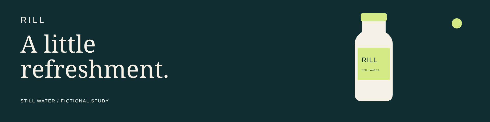

One campaign.
Three formats.
An editable vector study for an ultrawide header, portrait display and shelf strip. Each composition is rebuilt for its canvas. This is a production example, not a real product advertisement.
Ultrawide · Paused

01 / Preserve the product
The original schematic bottle remains consistent. Editable SVG shapes and text are supplied alongside an exact file manifest.
02 / Recompose, do not stretch
Wide, portrait and strip layouts have distinct reading orders. The strip drops the bottle illustration to protect message clarity.
03 / Verify the actual delivery
This local sequence uses eight-second holds and static transitions. Target-player performance, native-app import and physical readability remain unverified.